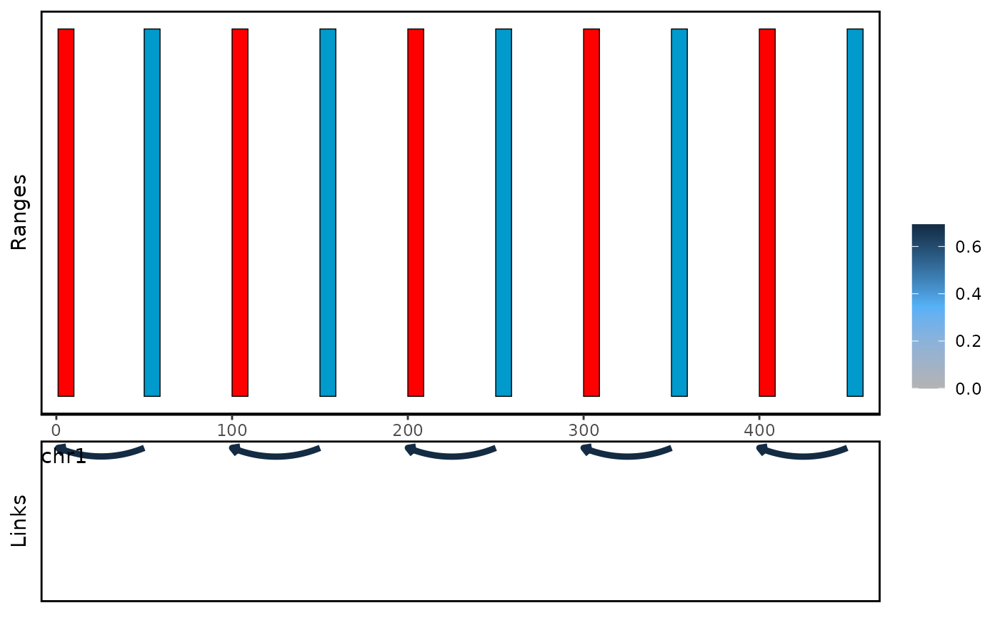

plot genomic ranges and links
Usage
# S4 method for class 'linkSet'
plot_genomic_ranges(
linkset,
showBait = NULL,
showOE = NULL,
x.range = NULL,
score.col = "count",
show.rect = TRUE,
extend.base = 1e+06,
...,
bait_col = "red",
oe_col = "DeepSkyBlue3",
default_col = "grey",
vjust = NULL,
linejoin = "mitre",
na.rm = FALSE,
minimal_width = 0.01,
show.legend = NA,
inherit.aes = TRUE,
link_plot_on_top = FALSE,
arrow.size = 0.05,
remove_x_axis = FALSE,
plot.height = 0.4,
plot.space = 0.1,
log.scale = TRUE
)Arguments
- linkset
A
linkSetobject.- showBait
A character vector specifying the bait region to be shown. Default: NULL.
- showOE
A
GRangesobject specifying the oe region to be shown. Default: NULL.- x.range
A numeric vector of length 2 specifying the x-axis range. Default: NULL.
- score.col
A character string specifying the column name of the score. Default: "count".
- show.rect
Logical value, whether to show the rectangle. Default: TRUE.
- extend.base
A numeric value specifying the extension base. Default: 1000000.
- ...
Additional arguments.
- bait_col
A character string specifying the color of the bait region. Default: "red".
- oe_col
A character string specifying the color of the oe region. Default: "DeepSkyBlue3".
- default_col
A character string specifying the color of the default region. Default: "grey".
- vjust
A numeric value specifying the vertical justification. Default: NULL.
- linejoin
A character string specifying the line join. Default: "mitre".
- na.rm
Logical value, whether to remove NA values. Default: FALSE.
- minimal_width
A numeric value specifying the minimal width. Default: 0.01.
- show.legend
Logical value, whether to show the legend. Default: NA.
- inherit.aes
Logical value, whether to inherit the aesthetics. Default: TRUE.
- link_plot_on_top
Logical value, whether to plot the link plot on top of the coverage plot. Default: FALSE.
- arrow.size
A numeric value specifying the size of the arrow head. Default: 0.05.
- remove_x_axis
Logical value, whether to remove the x-axis. Default: FALSE.
- plot.height
A numeric value specifying the height of the plot. Default: 0.4.
- plot.space
A numeric value specifying the space between the plot and the link plot. Default: 0.1.
- log.scale
Logical value, whether to log scale the score. Default: TRUE.
Examples
data(linkExample)
plot_genomic_ranges(linkExample, extend.base = 10)
#> Warning: score.col not found, using count as default
